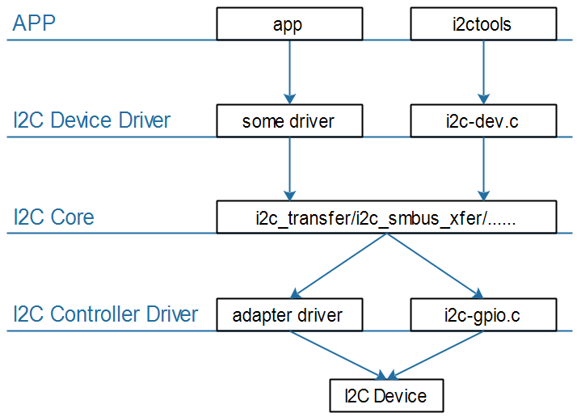
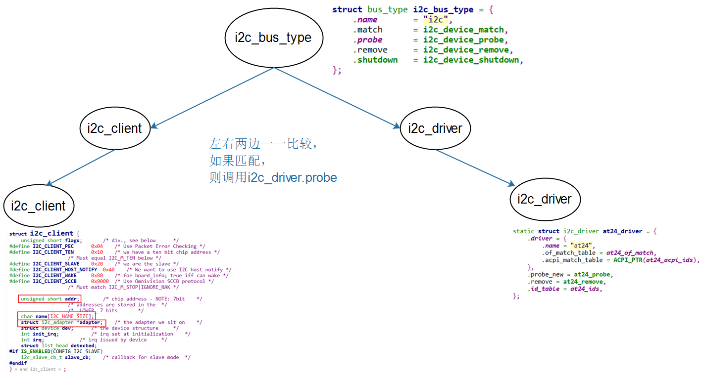

I2C驱动程序模板¶
参考资料：
- Linux内核文档:
Documentation\i2c\instantiating-devices.rstDocumentation\i2c\writing-clients.rst- Linux内核驱动程序示例:
drivers/eeprom/at24.c
1. I2C驱动程序的层次¶

I2C Core就是I2C核心层，它的作用：
- 提供统一的访问函数，比如i2c_transfer、i2c_smbus_xfer等
- 实现
I2C总线-设备-驱动模型，管理：I2C设备(i2c_client)、I2C设备驱动(i2c_driver)、I2C控制器(i2c_adapter)
2. I2C总线-设备-驱动模型¶

2.1 i2c_driver¶
i2c_driver表明能支持哪些设备：
- 使用of_match_table来判断
- 设备树中，某个I2C控制器节点下可以创建I2C设备的节点
- 如果I2C设备节点的compatible属性跟of_match_table的某项兼容，则匹配成功
- i2c_client.name跟某个of_match_table[i].compatible值相同，则匹配成功
- 使用id_table来判断
- i2c_client.name跟某个id_table[i].name值相同，则匹配成功
i2c_driver跟i2c_client匹配成功后，就调用i2c_driver.probe函数。
2.2 i2c_client¶
i2c_client表示一个I2C设备，创建i2c_client的方法有4种：
-
方法1
-
通过I2C bus number来创建
int i2c_register_board_info(int busnum, struct i2c_board_info const *info, unsigned len); -
通过设备树来创建
i2c1: i2c@400a0000 { /* ... master properties skipped ... */ clock-frequency = <100000>; flash@50 { compatible = "atmel,24c256"; reg = <0x50>; }; pca9532: gpio@60 { compatible = "nxp,pca9532"; gpio-controller; #gpio-cells = <2>; reg = <0x60>; }; }; -
方法2 有时候无法知道该设备挂载哪个I2C bus下，无法知道它对应的I2C bus number。 但是可以通过其他方法知道对应的i2c_adapter结构体。 可以使用下面两个函数来创建i2c_client：
-
i2c_new_device
static struct i2c_board_info sfe4001_hwmon_info = { I2C_BOARD_INFO("max6647", 0x4e), }; int sfe4001_init(struct efx_nic *efx) { (...) efx->board_info.hwmon_client = i2c_new_device(&efx->i2c_adap, &sfe4001_hwmon_info); (...) } -
i2c_new_probed_device
static const unsigned short normal_i2c[] = { 0x2c, 0x2d, I2C_CLIENT_END }; static int usb_hcd_nxp_probe(struct platform_device *pdev) { (...) struct i2c_adapter *i2c_adap; struct i2c_board_info i2c_info; (...) i2c_adap = i2c_get_adapter(2); memset(&i2c_info, 0, sizeof(struct i2c_board_info)); strscpy(i2c_info.type, "isp1301_nxp", sizeof(i2c_info.type)); isp1301_i2c_client = i2c_new_probed_device(i2c_adap, &i2c_info, normal_i2c, NULL); i2c_put_adapter(i2c_adap); (...) } -
差别：
-
i2c_new_device：会创建i2c_client，即使该设备并不存在
-
i2c_new_probed_device：
-
它成功的话，会创建i2c_client，并且表示这个设备肯定存在
-
I2C设备的地址可能发生变化，比如AT24C02的引脚A2A1A0电平不一样时，设备地址就不一样
-
可以罗列出可能的地址
-
i2c_new_probed_device使用这些地址判断设备是否存在
-
-
方法3(不推荐)：由i2c_driver.detect函数来判断是否有对应的I2C设备并生成i2c_client
-
方法4：通过用户空间(user-space)生成 调试时、或者不方便通过代码明确地生成i2c_client时，可以通过用户空间来生成。
// 创建一个i2c_client, .name = "eeprom", .addr=0x50, .adapter是i2c-3
# echo eeprom 0x50 > /sys/bus/i2c/devices/i2c-3/new_device
// 删除一个i2c_client
# echo 0x50 > /sys/bus/i2c/devices/i2c-3/delete_device
3. AT24C02驱动编写¶
3.1 修改设备树¶
- 放在哪个I2C控制器下面
- AT24C02的I2C设备地址
- compatible属性：用来寻址驱动程序
修改设备树：arch/arm/boot/dts/100ask_imx6ull-14x14.dts
&i2c1 {
clock-frequency = <100000>;
pinctrl-names = "default";
pinctrl-0 = <&pinctrl_i2c1>;
status = "okay";
at24c02 {
compatible = "100ask,i2cdev";
reg = <0x50>;
};
};
3.2 编写驱动¶
3.3 编写APP¶
3.4 上机¶